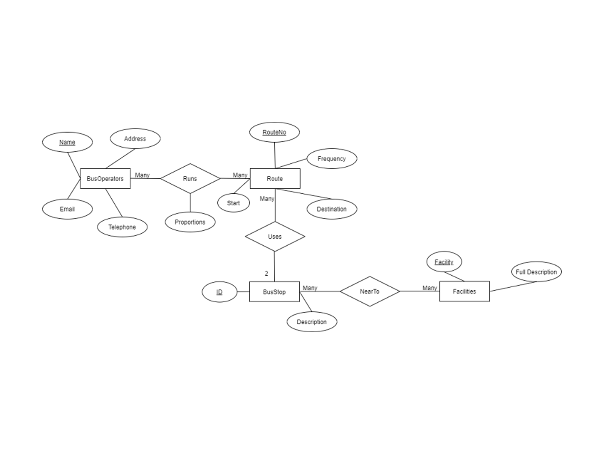
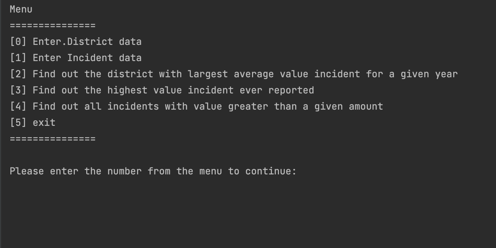
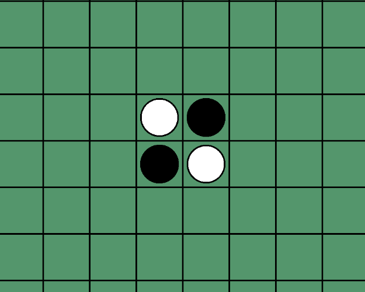

在这里，你将了解我在大学中参与过的主要项目
做项目的乐趣莫过于接受挑战，享受挑战，以及完成挑战之后的成就感
项目总览

网页开发
在一年的网页开发实操经历中，我主要参与了基于flask框架的动态网页开发。 从前端设计到后端的数据库建立，我都参与其中。对于前端开发，可以熟练使用CSS，JavaScript。 同时，有bootstrap使用经验。后端开发，熟悉flask框架的网页开发和SQLite, MariaDB。 在项目的数据库开发中，有通过SSH代理连接远程内部数据数据库的经验。
- 2021
- 2022

Python项目
有一年半的项目开发开发经验，最喜欢的的编程语言。掌握使用python在flask框架下的动态交互网页的全栈开发。 熟练使用DEAP进化算法库。基于DEAP算法库进行底层优化，提高进化图像准确度以及效率。
- 2021
- 2022
- 2022
预科
Visual Basic编程课程
国际预科文凭课程
This diploma is for higher education studies. It contains

大一
-
英格兰东北公交服务信息的存储与检索
⌄
⌃
使用MySQL存储公交线路和运行这些线路的公司。 做了一些SQL查询，找到公交车站之间的路线。
-
犯罪报告系统
⌄
⌃
用Java编写了一个犯罪报告系统。系统包含简单的用户界面， 包含实现的接口和单元测试。
-
计算机学院排课系统
⌄
⌃

这是一个团队项目。时间表系统是由我和其他四个学生开发的。 该系统能够为给定的学生注册到给定的课程。同时，它可以用来订计算机学院的教室。
-
反转棋游戏
⌄
⌃
根据给定的代码开发了奥赛罗反转游戏。AI是在游戏中执行的。 黑暗面由用户扮演，光明则由AI扮演。轮到用户了，游戏开始了 将显示所有潜在的和有效的stpes为用户提示。它能够检测到游戏是否成功 完成与否。如果完成，结果将自动计算并显示 哪一方赢得比赛。
大二
基于多边形的图像学习
本课题是利用进化算法来做图像机器学习。100个多边形将随机生成 在节目开始的时候。对于每个多边形，它们可能有不同的颜色、大小、透明度和位置在一个 画布。对于每一个生成的图像，它们将与目标图像进行比较，和计算准确性。随着程序的运行，种群(单个图像) 会进化，更像目标图像，因为进化算法会选择为下一代创造更好的图像。这种重复 过程称为多边形图像学习(复向量机器学习)。
我在这个项目中所做的是改进现有的DEAP库中的进化算法 ，以更少的生成次数(重复次数)获得更精确的图像。为此，我使用了数据分析和虚拟化工具来帮助我 估计参数是否是最好的，或者我的算法是否得到了改进。
网页版彩票应用
这个web应用程序有两种模式。作为用户，他们可以通过手动输入数字或随机生成一张彩票。 同时，他们也可以查看开奖轮的彩票中奖情况。作为管理员，他们可以创建一个中奖彩票，并查看 注册用户信息。
此网站实现了基本的安全功能。 有 输入验证， 错误处理， 加密， 处理用户登录， 双因素身份验证， 限制无效登录尝试次数， 基于角色的访问控制， 访问管理， 安全头，和 安全随机性。

联合国气候行动科普网站
这个web应用程序是用Flask编写的。这个应用程序的目的是教育年轻一代注意气候变化和减少碳足迹。
在这个网页应用程序上，用户可以使用碳计算器，做气候变化测试， 分享减少碳足迹，广交朋友。管理员可以管理 网站通过处理所报告的帖子来维护一个健康的社区。
在开发这个应用程序的过程中，我们遵循 软件工程。在实现之前，我们了解了一些背景知识 ，列出了所有功能性和非功能性需求，并创建了一个 对项目进行甘特图管理。在实现过程中，我们使用了Aglie 方法和DevOps。

模拟网络服务器和用户交流应用
这个项目是展示我对如何在互联网上使用UDP传输的东西的理解。
在这个项目中，我编写了一个web客户端来传输税务文件到 本地服务器。